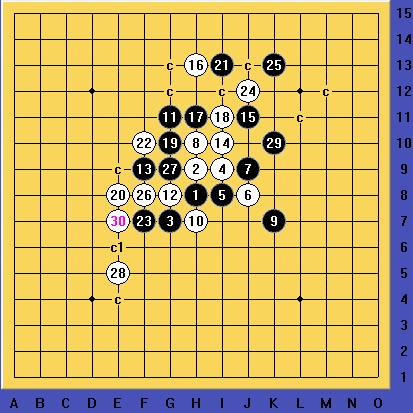
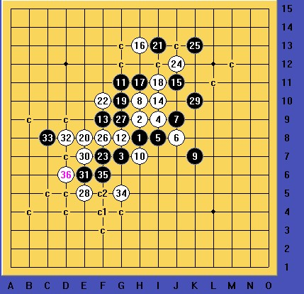
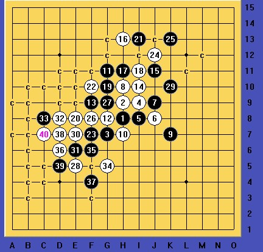

1.rar
1.rar
［ 自来水 于 2012-10-20 9:48:01 时花20金币送鲜花一朵］
［ 自来水 于 2012-10-20 9:48:01 时花20金币送鲜花一朵］
［ 茗弈宽容 于 2012-10-22 12:41:30 时奖励此帖[金币加 100 威望加1］



这道题目思路很明晰，图3稍微难算些，总体来看不是很复杂，但黑棋冲4较多，地毯起来比较繁琐。
［ 自来水 于 2012-10-20 9:48:25 时花20金币送鲜花一朵］
［ 华夏小宝 于 2012-10-20 12:54:13 时花20金币送鲜花一朵］
［ 茗弈宽容 于 2012-10-22 12:41:49 时奖励此帖[金币加 100 威望加1］
相对简洁的参考胜法如下：
总共13步的VCT,感觉难度很大。
其中关键的几手棋是：
白36做了两步的VCF,白40做了两步的VCF，白46四三做杀，这三手棋需要算的防点稍微多一些。
黑41若不充四，则将在B7点被抓三三，迅败，如下图：
此题答案参考了山城刀客的走法，在此表示感谢。
［此帖子已被 华夏小宝 在 2012-10-20 13:14:53 编辑过］
［此帖子已被 华夏小宝 在 2012-10-20 13:17:33 编辑过］
［ 自来水 于 2012-10-21 9:02:22 时花20金币送鲜花一朵］
［ 茗弈宽容 于 2012-10-22 12:42:28 时花20金币送鲜花一朵］
［ 茗弈宽容 于 2012-10-22 12:42:28 时花20金币送鲜花一朵］
［ 茗弈宽容 于 2012-10-22 12:42:28 时花20金币送鲜花一朵］
这道好简单